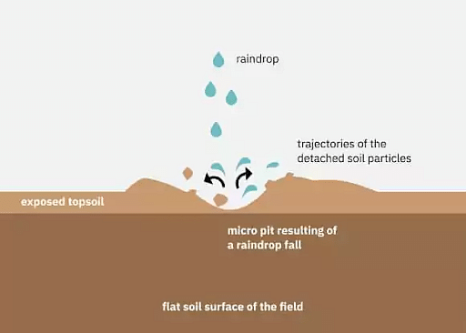
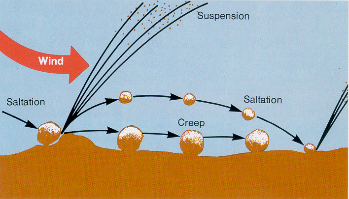
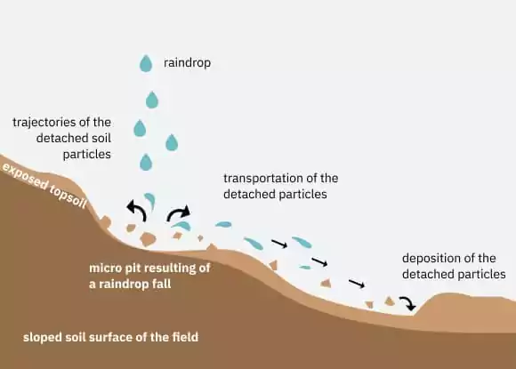

Splash Erosion
Erosion due to the impact of falling raindrops on the soil surface leading to the destruction of the crumb structure.
Splash erosion marks the initial phase in the erosion process, wherein the impact of raindrops on bare soil causes the detachment and dispersion of soil particles. Picture a rain shower on an exposed patch of land: as each raindrop hits the ground, it dislodges tiny soil particles, sending them airborne in a splash. These airborne particles may travel short distances, driven by the force of the raindrop impact, before settling back onto the ground. While individually small, the cumulative effect of countless raindrops hitting the soil surface can result in significant soil displacement.
The intensity of splash erosion depends on various factors, including the velocity and size of raindrops, the angle of impact, and the condition of the soil surface. In areas with compacted soil or minimal vegetation cover, raindrops are more likely to dislodge soil particles, leading to more pronounced splash erosion. Additionally, terrain characteristics such as slope steepness can exacerbate splash erosion by increasing the force of impact and the potential for soil movement.
Splash erosion not only removes soil particles from the surface but also disrupts the soil structure, making it more susceptible to further erosion processes. By loosening the topsoil and exposing bare earth, splash erosion sets the stage for subsequent erosion phenomena such as sheet and rill erosion. Furthermore, the displaced soil particles can clog soil pores and reduce infiltration rates, increasing surface runoff and the risk of sediment transport.
Addressing splash erosion is crucial for preserving soil fertility and preventing downstream sedimentation. Implementing soil conservation practices such as the establishment of vegetative cover, mulching, and contour plowing can help mitigate the impacts of splash erosion by protecting the soil surface from raindrop impact and promoting soil stability. By minimizing soil disturbance and enhancing soil structure, these measures contribute to sustainable land management and erosion control efforts.
Sheet Erosion
Uniform removal of soil in thin layers from the land surface caused by wind.
Sheet erosion is a widespread form of soil degradation characterized by the uniform removal of a thin layer of topsoil across a broad expanse of land. Unlike splash erosion, which primarily affects the soil surface through the detachment and dispersal of soil particles by raindrop impact, sheet erosion involves the gradual loss of soil across large areas due to the flow of water over the land surface.
When rainwater flows over bare or sparsely vegetated soil, it picks up soil particles and carries them away in a thin, continuous sheet. This process is facilitated by factors such as slope gradient, soil texture, and land management practices. On gently sloping terrain, water can spread out horizontally, creating a thin film that carries soil particles downslope. Similarly, soil with poor structure or low organic matter content is more prone to detachment and transport by flowing water.
Sheet erosion is often difficult to detect in its early stages, as the loss of soil occurs uniformly across the landscape. However, over time, the cumulative effect of repeated sheet erosion can result in the depletion of topsoil, leading to reduced soil fertility and productivity. Moreover, the loss of topsoil through sheet erosion can have far-reaching environmental consequences, including increased sedimentation in water bodies, degradation of aquatic habitats, and impairment of water quality.
To mitigate the impacts of sheet erosion, soil conservation measures must be implemented to stabilize the soil surface and reduce the velocity of surface runoff. Strategies such as contour plowing, terracing, and the establishment of vegetative cover can help to intercept and slow down the flow of water, minimizing soil erosion and promoting soil conservation. By preserving the integrity of the soil surface and enhancing soil structure, these measures contribute to the sustainable management of land resources and the protection of ecosystem health.
Rill Erosion
Form Of Water Erosion In Which The Erosion Takes Place Through Numerous Narrow
Rill erosion represents a more advanced stage of soil degradation, characterized by the formation of small, concentrated channels or grooves in the soil surface. These channels, known as rills, are carved out by the erosive force of flowing water, which concentrates in specific areas, often following the path of least resistance created by previous erosion processes like sheet erosion.
Rill erosion typically occurs on moderately sloping terrain or in areas where sheet erosion has already begun to create small depressions in the landscape. As water accumulates in these depressions, it gains velocity and erosive power, leading to the formation of rills. Initially, rills may be shallow and narrow, but over time, they can deepen and widen, exacerbating soil loss and degradation.
The development of rill erosion can have significant implications for soil health and ecosystem functioning. As rills cut into the soil surface, they expose underlying layers of soil, which are often less stable and more susceptible to erosion. This exposes fresh soil to further erosion, perpetuating a cycle of degradation and loss.
Moreover, rill erosion can contribute to sedimentation in nearby water bodies, impairing water quality and aquatic habitats. Sediment-laden runoff from rill erosion can smother aquatic plants, degrade habitat for fish and other aquatic organisms, and increase the risk of flooding by reducing the capacity of waterways to convey flow.
To mitigate the impacts of rill erosion, effective erosion control measures must be implemented to stabilize the soil surface and prevent further soil loss. Strategies such as contour plowing, terracing, and the construction of check dams can help to intercept and slow down the flow of water, reducing its erosive power and minimizing the formation of rills. Additionally, the establishment of vegetative cover and the implementation of conservation tillage practices can help to improve soil structure and stability, reducing the risk of erosion and promoting soil conservation. By addressing rill erosion, we can protect soil resources, safeguard water quality, and maintain the integrity of ecosystems for future generations.
